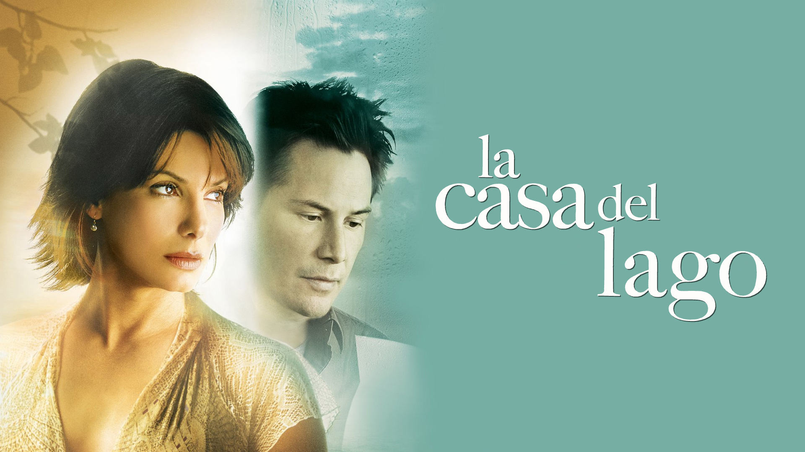
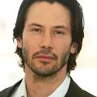

Cómo grabamos "La casa del lago"

"La casa del lago" se ha convertido en nuestra serie más popular este año, y hoy queremos compartir cómo la hicimos posible.
La ubicación
Grabamos en una auténtica casa junto al lago Como en Italia. El equipo de producción pasó 3 meses buscando la ubicación perfecta:
- Búsqueda en 5 países diferentes
- Más de 20 ubicaciones evaluadas
- Finalmente seleccionada la Villa Balbianello
Tecnología utilizada
Para lograr esas impresionantes tomas aéreas:
Cámaras: Red Komodo 6K
Drones: DJI Inspire 2 con Zenmuse X7
Iluminación: Sistema ARRI SkyPanel
Retos principales
El mayor desafío fue grabar las escenas en el agua:
"Tuvimos que construir una plataforma especial bajo el agua para las cámaras y mantenerla estable con las corrientes del lago" - Marco Ricci, Director de Fotografía
El elenco
Conoce a los protagonistas:
Sandra Bullock como Kate Forster

Keanu Reeves como Alex Wyler